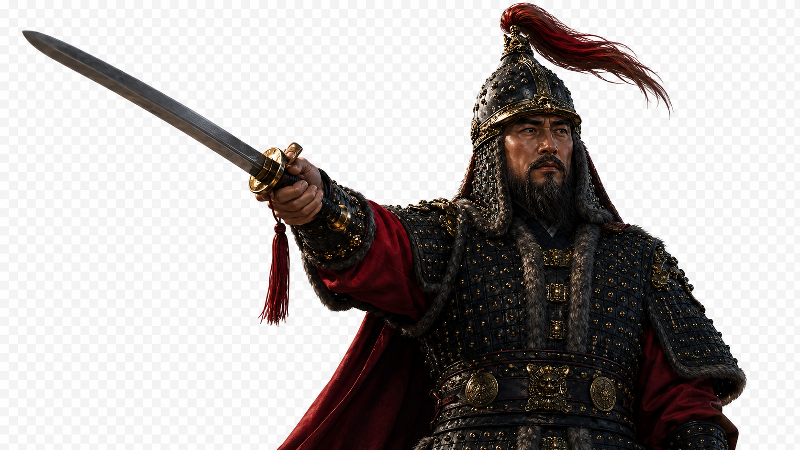
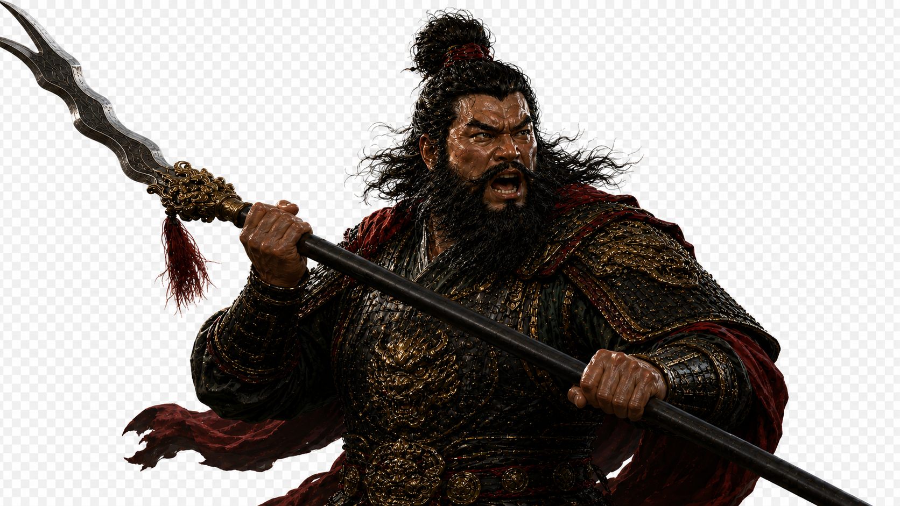
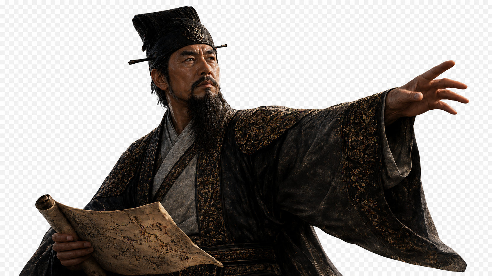
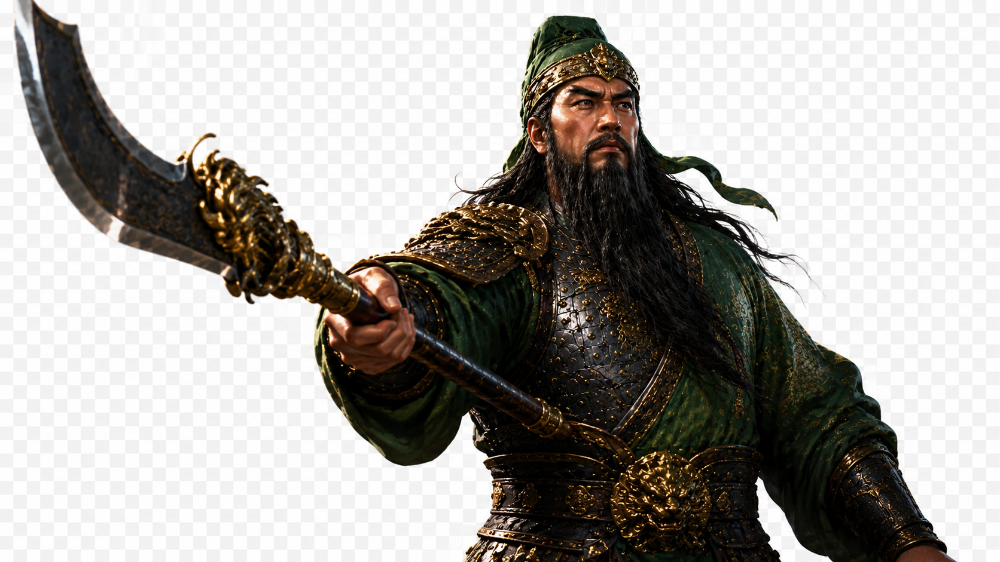

EASTWAR 개발일지 #015
고유특기, 책략, 방어 도입 - 화려해진 전투
2026년 5월 25일전투가 "장식"에서 "기술"까지 다 챙긴 이틀
저번 3일이 슬롯 구조랑 지원군, AI 포위처럼 '보이지 않는 뼈대'를 다듬은 시간이었다면, 이번 이틀은 정반대였다. 하단 명령바에 진짜 아트가 입혀지고, 영웅들이 드디어 자기만의 필살기를 쓰기 시작했고, 방어라는 개념까지 생겼다. 겉모습도, 전투의 깊이도 동시에 한 단계씩 올라간 이틀이었다.
하단 명령바에 옷을 입히다
지금까지 화면 아래 명령 버튼 3개는 그냥 기본 스타일이었다. 이번엔 진짜 아트 에셋을 입힐 수 있는 구조부터 먼저 만들었다. 이미지가 아직 다 안 그려졌어도 프로젝트가 안 깨지고 기존 버튼으로 자연스럽게 대체되도록 만든 게 포인트였다. 그 다음 실제 PNG를 연결하고, 배경의 임시 검은 패널도 걷어내고 진짜 배경 이미지로 바꿨다. 여기에 맞춰 Formation Guide 카드(부대 배치 안내)도 정보를 더 압축해서 전략게임다운 느낌으로 정리했다.
드디어, 영웅들이 자기 기술을 쓴다
이번 이틀의 진짜 메인은 고유특기(필살기) 시스템이었다. 지금 전투에 등장하는 영웅 10명 전원이 각자의 특기를 갖게 됐다. 이순신이 학익진을 펼치면 "학익진 포격!"이라는 텍스트가 뜨고, 기본 공격보다 1.5배 강한 데미지 숫자가 크고 붉게 튀어오르고, 화면이 짧게 흔들린다. 발동 방식도 다듬었다. 버튼 누르자마자 바로 터지는 게 아니라, 먼저 범위와 대상을 보여주고 그 다음 클릭해야 실제로 발동하게 만들어서 "내가 직접 조준해서 쓴다"는 느낌을 살렸다.
여기서 끝이 아니라 자동전투와 적군도 고유특기를 쓰게 확장했다. 그러자 예상치 못한 문제가 따라왔다. 적이 무조건 특기부터 쓰려고 하다 보니, 가까이 와서 붙어 싸우기보다 멀리서 특기만 남발하는 그림이 나온 거다. 그래서 "특기는 가치 있을 때만 쓴다"는 기준을 다시 잡고, 기본 공격과 이동 압박이 살아있도록 우선순위를 손봤다.




죽음에도 표정이 생겼다
유닛이 전투에서 빠질 때 그냥 사라지기만 하던 걸 바꿨다. 적이 쓰러지면 적장 얼굴과 이름, 짧은 퇴각 대사가 화면에 뜨고, 아군이 쓰러지면 전투불능 토스트가 같은 방식으로 뜬다. 처음엔 "분명 넣었는데 화면에 안 보인다"는 문제가 있었는데, 파고들어 보니 이미 만들어둔 로직이 있었고 연결이 안 된 것뿐이었다. 새로 또 만들 뻔했는데 원인부터 제대로 찾은 덕분에 중복 없이 깔끔하게 살렸다.
책략과 방어, 웹 버전에서 데려오다
원래 웹 버전(SamWar_web)에 이미 있던 책략 시스템을 고도 엔진 전투로 그대로 옮겼다. 새로운 메뉴를 만들지 않고 웹에 있던 구조를 그대로 따르는 게 원칙이었다. 여기에 방어 명령도 새로 추가했다. 방어를 선택하면 피해가 줄고 부상병 일부가 회복되는데, 이동 버튼이 있던 자리에 방어 버튼을 넣어서 자리싸움 없이 자연스럽게 붙였다.
상태 표시도 이번에 확실히 정리했다. 방어는 ◆, 공격력 상승은 ▲ 처럼 아이콘을 통일하고, 색이 너무 진하고 촌스러웠던 걸 톤 다운했다. 편성창에서 병종 아이콘이랑 상태 텍스트가 카드 밖으로 삐져나오던 것도 잡았고, 상태가 많아지면 "외 N"으로 축약해서 안 넘치게 만들었다.
이제, 씬에서 직접 옮길 수 있게
마지막으로 손댄 건 눈에 안 보이지만 앞으로를 위해 제일 중요한 작업이었다. 지금까지는 유닛 얼굴, HP바, 병력 숫자, 클릭 영역, 방향 표시 같은 요소들이 코드 곳곳에 흩어져서 관리되고 있었다. 이걸 슬롯 하나 기준으로 다 묶어서, 나중에 에디터에서 슬롯 위치만 드래그하면 관련된 모든 요소가 같이 따라오게 만드는 작업을 시작했다.
아직 완전히 끝나진 않았다. 슬롯을 옮기고 저장한 뒤 실행해보면 일부 유닛이 여전히 예전 위치에서 등장하는 문제가 남아있다. 원인은 실제 등장 위치가 슬롯이 아니라 예전 방식의 마커에 남아있어서인데, 이 부분은 다음 작업에서 마저 잡을 예정이다.
다음 이야기
이제 남은 큰 산은 전장 크기를 최종 사이즈로 키우고, 이동 가능/불가능한 지형을 넣는 일이다. 그게 정해지면 적 AI가 무리 지어 움직이는 로직도 그때 손볼 차례다.